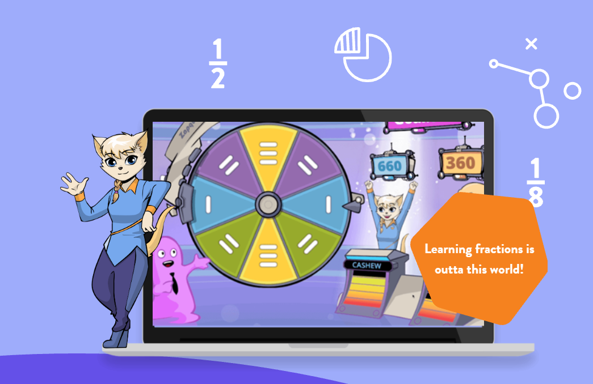
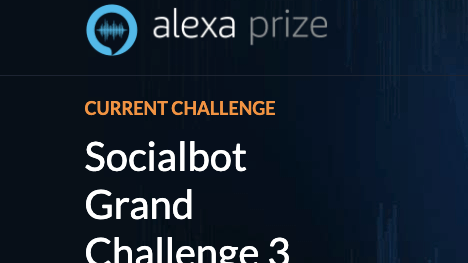
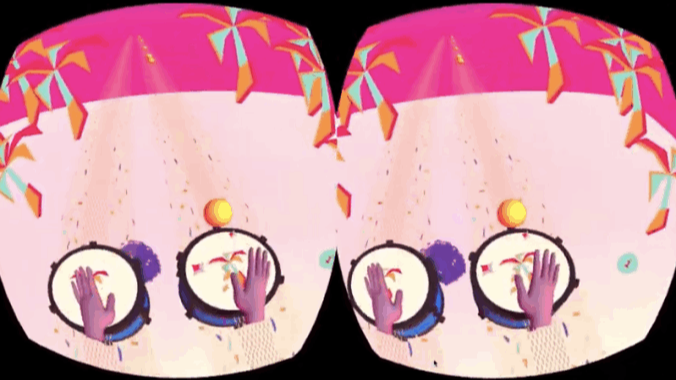
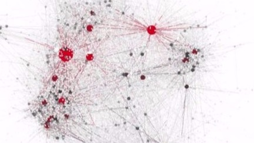

Selected Projects
ThinkHigher
Customizable voice simulation platform for professional onboarding, practice high-stakes workplace conversations before week 1

AIFL: AI-Assisted French Learning
Multi-agent GenAI tutor for L2 French learning with LLM-based knowledge tracing, accepted at AIED 2026
De-identification at Scale
First large-scale de-identified student discussion corpus with state-of-the-art PII removal, serving the Learning @ Scale grant

Frax Math
Adaptive educational games for K3–5 students with ESSA Tier 2 evidence of significantly higher math growth

Amazon Alexa Challenge
Social bot's core natural language understanding section using NLTK, spacy, word2vec with Google and Microsoft API

Lucid Drum
2020 Tree Hack @ Stanford "Most Creative Hack" winning project, an indulging virtual reality drumming game

Explore Student Social Network
The first Peking University Student Social Network Model from over 2.8 million campus canteen log data